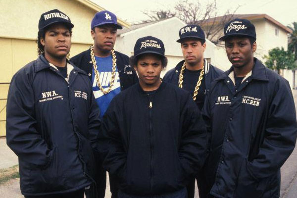

<!-- 1. შექმენით <div> თეგი, ჩასვით 5 სათაური და შეღებეთ ისინი წითე ლფერში div-ში style თეგის გამოყენებით, ამ 5 სათაურიდან ერთ-ერთი გახადეთ მწვანე ფერის.
    2. შექმენით <div> თეგი, ჩასვით 5 პარაგრაფი 3 იყოს მწვანე, 1 ყვითელი და 1 წითელი, ასევე დივში დაამატეთ ფოტო, რომელსაც შეუცვლით ზომას.
    3. შექმენით <div> თეგი, ჩასვით 2 სურათი და ორივე სურათს გაუკეთეთ რაიმე სტილი როგორიც მოგინდებათ, ეცადეთ inspect-ის გამოყენებით ნახოთ, თუ რამდენ ადგილს იკავებს დივი, შედეგი დასქრინეთ და ჩააგდეთ დავალების ფოლდერში.
    4. შექმენით ცხრილი, გამოიყენეთ ეს ელემენტები: table, tr, th, td. ცხრილი რაზეც გინდათ იმაზე გააკეთეთ მთავარია გაალამაზოთ.
    5. შექმენით საიტი რომელშიც გამოიყენებთ აქამდე ნასწავლ ყველა მასალას multimedia ელემენტებზე, თეგებს: <video>,<audio>,<source> და ატრიბუტებს: controls. -->


<!-- 1 -->

<div style="color: red;">

<h1>hello</h1>
<h2>idk</h2>
<h3 style="color: green;">clikc me</h3>
<h4>chad</h4>
<h5>mini-lider</h5>

</div>

<!-- 2 -->

<div style="color: green;">

<h1>idk</h1>
<h2 style="color: yellow;">hello</h2>
<h3>hooo</h3>
<h4 style="color: red;">dog</h4>
<h5>cat</h5>


</div>

<!-- 3 -->

<div style="width: 700px;">




</div>


<!-- 4 -->

<table style="width: 80%;  border-collapse: collapse;">
    <tr style="background-color: #4CAF50; color: white;">
        <th >Title</th>
        <th >Author</th>
        <th >Genre</th>
        <th >Year</th>
    </tr>
    <tr style="background-color: #f4f4f4;">
        <td >The Great Gatsby</td>
        <td>F. Scott Fitzgerald</td>
        <td >Classic</td>
        <td >1925</td>
    </tr>
 
</table>

<!-- 5 -->

<audio controls src="Eazy E - Boyz-n-the-Hood (Music Video).mp3"></audio>
<video controls src="Eazy E - Boyz-n-the-Hood (Music Video).mp4"></video>